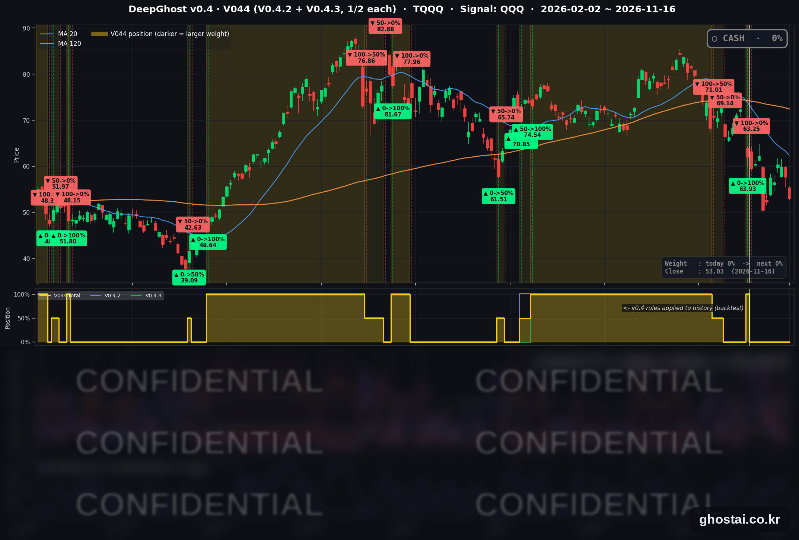

엔비디아 악재에 반도체 급락, 나스닥 200일선 아래로.
· Ghost.AI 데일리 리포트
👻 매일 시그널과 히스토리를 홈페이지에서 한눈에 → www.ghostai.co.kr
회원 페이지 안내 — 회원 가입하시면 공식 전략 v0.4의 TQQQ 비중과 판단 근거, 원본 차트, 분석 레포트를 매일 확인하실 수 있습니다. 회원 페이지는 블로그·유튜브보다 먼저 업데이트됩니다. 지금 베타 회원을 받고 있으며, 이메일과 필명만으로 가입하실 수 있고 서비스 사용료는 받지 않습니다. 이메일 확인 후 바로 이용하실 수 있습니다.
엔비디아 경영진 공백에 베선트 재무장관의 외부 CEO 영입 요구와 상무부의 원격 칩 사용 제한이 겹치면서 반도체주가 시가부터 크게 내렸고, 장중에는 하락이 대형 기술주·금융주로 번졌습니다. 나스닥은 2.49%, S&P 500 은 1.92% 내려 3거래일 연속 하락했고, 하루 하락 폭은 11월 5일 이후 가장 큽니다. 나스닥은 200일선보다 2.52% 아래에서 마감했습니다. 금리와 유가는 내렸고 VIX 는 22.91 로 올랐습니다. TQQQ 는 8.06% 내렸고, 전략은 현금 보유 중입니다.
📊 오늘의 매매 신호
| 항목 | 내용 |
|---|---|
| 오늘의 신호 | 🟡 신규 신호 없음 — 전략은 현금 보유를 유지합니다 |
| 포지션 상태 | 💵 현금 보유 중 (OUT OF POSITION) |
| 최근 매매 | 10월 19일 $71.01 절반 매도 · 10월 22일 $69.14 나머지 매도 → 10월 30일 $63.93 재매수 · 11월 2일 $63.25 매도(-1.06%) |
| 현금 보유 기간 | 2026-11-02 ~ 2026-11-16 (11거래일, 11월 2일 시가 매도 후) |
| TQQQ 종가 | $53.03(-8.06%) |
TQQQ 시그널 — OUT OF POSITION
현재 상태: 현금 보유 중 | 10월 $71.01·$69.14 분할 매도 · 11월 2일 시가 $63.25 매도 · 11월 2일 이후 전략 수익률 +2.00%

전략은 하락이 본격화하기 전인 10월 19일 시가 71.01달러에 TQQQ 절반을, 10월 22일 시가 69.14달러에 나머지를 매도했습니다. 10월 30일 시가 63.93달러에 다시 샀지만 하루 만인 11월 2일 시가 63.25달러에 매도해 1.06% 손실로 마쳤고, 그 뒤로 현금 보유 중입니다. 11월 16일에도 새 신호는 나오지 않았습니다.
TQQQ 는 8.06% 내린 53.03달러로 마감해 하루 하락 폭은 11월 5일 이후 가장 크고, 종가는 11월 6일 이후 가장 낮습니다. 3거래일 연속 내려 11월 12일 종가보다 11.44% 낮습니다. 10월에 매도한 71.01달러·69.14달러보다는 각각 25.32%·23.30% 낮고, 11월 2일 매도가보다는 16.16% 낮습니다.
🛡️ 10월 19일 매도 이후 지켜 낸 자산
10월 19일 시가부터 11월 16일 종가까지 수익률 1만 달러였다면 TQQQ 를 계속 보유 -25.32% $7,468 전략 (10월 분할 매도 → 현금) -2.37% $9,763 차이 22.95%p $2,295 를 지킴 TQQQ 가 71.01달러에서 53.03달러로 25% 넘게 내리는 동안, 전략은 하락 초입에 현금으로 옮겨 손실을 2%대로 막았습니다. 10월 30일 다시 샀다가 11월 2일 판 매매의 손실(-1.06%)까지 넣은 값입니다.
오늘 미국 시장 — 시황 요약
지수 마감
| 지수 | 종가 | 등락률 |
|---|---|---|
| S&P 500 | 7,416.59 | -1.92% |
| 나스닥 종합 | 24,509.76 | -2.49% |
| 다우존스 | 51,608.17 | -1.41% |
| 러셀 2000 (IWM) | 272.94 | -1.66% |
| QQQ (나스닥100) | 661.75 | -2.67% |
| 반도체 ETF (SOXX) | 141.22 | -5.41% |
| TQQQ | 53.03 | -8.06% |
지수는 금요일보다 낮게 출발해 장중 반등 없이 저점 부근에서 마감했고, 모든 지수의 장중 고가가 금요일 종가보다 낮았습니다. 나스닥 종가는 11월 5일 이후 가장 낮고, 200일 이동평균보다 2.52% 아래입니다. S&P 500 은 아직 200일선보다 1.01% 위에 있습니다.
시가와 종가의 차이가 컸습니다. S&P 500 구성종목 493개 중 287개가 금요일 종가보다 높게 출발했지만, 391개가 시가보다 낮게 끝났고 종가 기준으로는 146개만 올랐습니다(하락 345개). 10월 6일 최고 종가와 비교하면 S&P 500 은 5.15%, 나스닥은 11.20% 낮습니다.
국채 금리 동향
| 만기 | 11/13 종가 | 11/16 종가 | 전일 대비 |
|---|---|---|---|
| 3개월 | 4.122% | 4.125% | +0.3bp |
| 5년 | 4.981% | 4.935% | -4.6bp |
| 10년 | 5.154% | 5.121% | -3.3bp |
| 30년 | 5.481% | 5.467% | -1.4bp |
지난주 5~30년물이 22~33bp 오른 뒤 처음 내렸습니다. 미 재무부 기준 2년물은 4.83% 로 5bp 내려, 2~5년 구간이 가장 많이 내렸습니다. 3개월물이 거의 움직이지 않아 12월 인상 전망은 그대로이고, 그 이후 추가 인상 폭에 대한 기대가 조금 줄었습니다. 10년-3개월 스프레드는 99.6bp 로 역전은 없습니다.
이날 하락은 금리 상승 때문이 아닙니다. 금리가 내렸는데도 정보기술·에너지 업종이 가장 많이 내렸고, 필수소비재·유틸리티만 올랐습니다. 주식에서 빠진 자금 일부가 중기 국채로 옮겨 갔습니다.
연준 발언 & 금리 패스
- 워시 의장 (11월 16일, 샌프란시스코 연은 콘퍼런스 개회사): 통화정책·물가·금리에 대한 언급은 없었습니다. AI 가 혁신의 방법과 속도를 바꾸고 있는 것으로 보이지만, 생산성 증가율이 더 높은 추세로 올라섰다고 보기는 아직 어렵다고 했습니다.
- 바 이사 (11월 16일, 밀라노 AI 금융 콘퍼런스): 통화정책 언급은 없었습니다. 대형 AI 기업의 부채와 장부 밖 채무가 크게 늘었고, 투자금이 다시 컴퓨팅 구매로 돌아오는 순환 구조가 있다고 지적하며, 급격한 반전이 빠른 부채 축소와 투매로 이어질 수 있다고 우려했습니다.
- 제퍼슨 부의장 (11월 13일 저녁): 통화정책 기조를 정하는 데 물가 경로가 더 중요한 신호라고 했고, 에너지 가격 상승이 물가 전반으로 번질 위험을 우려했습니다.
- 금리 경로: 세 발언 모두 중립입니다. CME FedWatch 기준 12월 0.25%p 인상 확률은 11월 13일 89.7% 였습니다(11월 16일 값은 확인하지 못했습니다). 기준금리는 3.75~4.00% 이고 다음 회의는 12월 8~9일입니다.
오늘의 핵심 이슈
- 엔비디아 경영진 문제에 정부 압박과 칩 규제가 겹쳤습니다. 베선트 재무장관은 주말에 엔비디아 이사회에 외부에서 새 CEO 를 찾으라고 요구했고, 상무부는 중국 기업이 해외 데이터센터의 엔비디아 칩을 빌려 쓰는 경로를 막는 조치를 발표했습니다. 엔비디아는 4.12% 내린 156.14달러로 2025년 7월 1일 이후 가장 낮은 종가를 기록했습니다. 반도체 ETF(SOXX)는 5.41% 내렸고 이 중 4.23% 가 시가 갭이었습니다. 마이크론(-7.62%)과 인텔(-7.02%)은 11월 5일 이후 하루 하락 폭이 가장 컸습니다.
- 장중에는 하락이 대형 기술주와 금융주로 번졌습니다. 알파벳은 시가가 0.66% 낮았는데 장중 3.43% 더 내려 4.07% 하락했고, 아마존(-3.34%)·메타(-2.38%)도 하락분 대부분이 장중에 나왔습니다. 골드만삭스(-2.73%)·모건스탠리(-2.66%)·JP모건(-2.31%)도 2% 넘게 내렸습니다. 업종별 중간값은 필수소비재(+0.36%)와 유틸리티(+0.14%)만 올랐습니다.
- 원유는 4% 가까이 내렸습니다. 서부텍사스유(WTI)는 3.95% 내린 85.06달러로 8월 28일 이후 가장 낮게 마감했습니다. 로이터는 호르무즈 해협을 지나는 중동산 원유 운송이 전쟁 전 수준에 가깝게 회복돼 공급 과잉 전망이 커졌다고 전했습니다. 11월 뉴욕 연은 제조업지수는 7.8 로 예상(16.7)을 밑돌았지만 고용지수는 2022년 6월 이후 가장 높았습니다.
변동성 & 투자심리
VIX 는 18.70% 오른 22.91 로 마감해 11월 6일 이후 가장 높은 종가를 기록했고, 3거래일 연속 올랐습니다. 장중에는 24.52 까지 올랐습니다. 공포탐욕 지수는 31(공포)로 전일 39, 1주 전 32, 1개월 전 18(극단적 공포)입니다(feargreedmeter.com 표시값, 참고용). 반도체에서 시작된 하락이 장중 여러 업종으로 번져 시장 분위기는 비관 쪽입니다. 다만 필수소비재·유틸리티·헬스케어 보험주는 올라 시장 전체가 함께 내린 날은 아닙니다.
매크로 & 원자재
| 품목 | 종가 | 등락률 |
|---|---|---|
| WTI 선물 | $85.06 | -3.95% |
| 브렌트 선물 | $91.84 | -4.17% |
| 원유 ETF (USO) | $140.03 | -3.81% |
| 금 선물 | $3,859.00 | -0.70% |
| 금 ETF (GLD) | $352.93 | -0.71% |
원유는 장 초반 호르무즈 해협 유조선 피격 보도로 올랐다가 장중 하락으로 돌아섰습니다. 금은 주식 하락에도 0.7% 내렸습니다.
주요 종목 동향
| 종목 | 종가 | 등락률 | 비고 |
|---|---|---|---|
| AAPL | 352.78 | -0.98% | 금요일 사상 최고 종가 뒤 하락, 하락분 전부 장중 |
| MSFT | 517.99 | -1.12% | |
| NFLX | 60.75 | -2.25% | |
| QCOM | 168.52 | -2.29% | 반도체 동반 약세 |
| META | 626.41 | -2.38% | |
| TSLA | 379.74 | -2.69% | |
| AMZN | 257.75 | -3.34% | |
| AVGO | 333.40 | -3.92% | 하락분 전부 시가 갭 |
| GOOGL | 283.72 | -4.07% | 10월 29일 이후 가장 큰 하락, 하락분 대부분 장중 |
| NVDA | 156.14 | -4.12% | 2025년 7월 1일 이후 최저 종가, 실적 11월 17일 장 마감 뒤 |
| INTC | 55.47 | -7.02% | 11월 5일 이후 가장 큰 하락 |
| MU | 719.02 | -7.62% | 11월 5일 이후 가장 큰 하락, 메모리주 동반 약세 |
커버리지 12종목이 모두 내렸습니다. 반도체 종목은 하락분 대부분이 시가 갭이었고, 알파벳·메타·애플·마이크로소프트·넷플릭스는 장중 하락이 더 컸습니다.
다음 일정 (미 동부시간)
- 11/17(화) 08:30 10월 소매판매·수출입물가 / 09:10 월러 이사 연설 / 09:15 산업생산 / 홈디포·디즈니 실적 / 엔비디아 3분기 실적(장 마감 뒤 16:20 전후, 17:00 콘퍼런스콜)
- 11/18(수) 08:30 10월 주택착공 / 13:35 바 이사 연설 / 14:00 10월 FOMC 의사록 / 앤트로픽 공모가 결정
- 11/19(목) 08:30 주간 실업수당 청구·필라델피아 연은 지수 / 09:25 제퍼슨 부의장 대담 / 월마트 실적 / 앤트로픽 나스닥 거래 시작 예정
- 11/20(금) 08:25 월러 이사 / 10:00 11월 미시간대 소비자심리 확정치 / 12:15 쿡 이사 연설 / 월간 옵션 만기
- 11/25(수) 14:00 베이지북
- 11/26(목) 추수감사절 휴장, 11/27(금) 13:00 조기 폐장
- 12/4(금) 08:30 11월 고용보고서
- 12/8~12/9 FOMC
Ghost.AI — Quantitative AI Investment
Model: DeepGhost v0.4 | Transformer-Based Deep Learning
Coverage: 14 tickers | Updated every trading day after US market close
⚠️ 본 자료는 정보 제공 목적으로만 작성되었으며 투자 권유가 아닙니다. 모든 투자의 책임은 투자자 본인에게 있습니다. 과거 성과가 미래 수익을 보장하지 않습니다.
[유의사항]
- 본 서비스는 불특정 다수를 대상으로 발행되는 단방향 정보 제공 서비스이며, 투자자 개인의 재산 상황·투자 목적·위험 선호도를 반영한 개별 투자 조언이 아닙니다.
- 고스트에이아이 주식회사는 고객과 쌍방향 의사소통(개별 상담, 맞춤형 자문 등)을 제공하지 않습니다.
- 본 콘텐츠는 투자 권유 또는 매매 주문의 청약·청약의 권유에 해당하지 않으며, 최종 투자 판단 및 그에 따른 손익의 책임은 전적으로 투자자 본인에게 있습니다.
고스트에이아이 주식회사